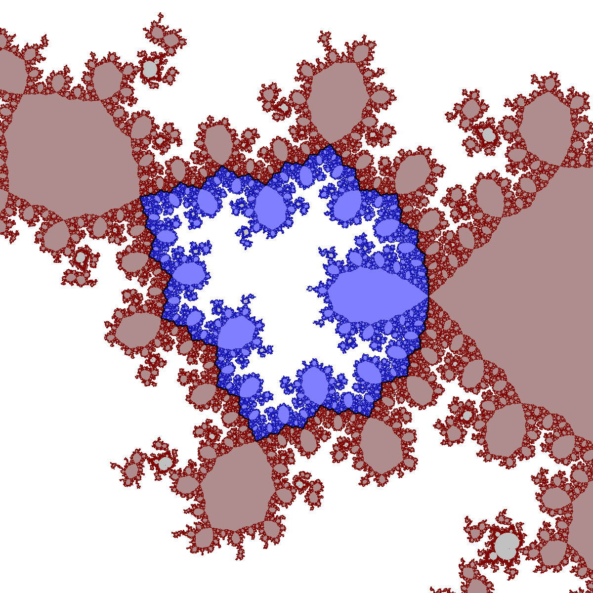

|  | |
|
On the left is the connectedness locus of the family of critically marked cubic polynomials with a fixed Siegel disk of the golden mean rotation number. There is an involution of the punctured plane sending red to blue, which corresponds to swapping the two marked critical points. The common boundary of red and blue, shown on the right, is a highly intricate Jordan curve invariant under this involution. It can be described as the
locus of all cubics with both critical points on the boundary of their Siegel disks. For details, see
S. Zakeri, Dynamics of cubic Siegel polynomials, Commun. Math. Phys. 206 (1999) 185-233. Picture courtesy of Arnaud Cheritat (http://picard.ups-tlse.fr/~cheritat) |
|